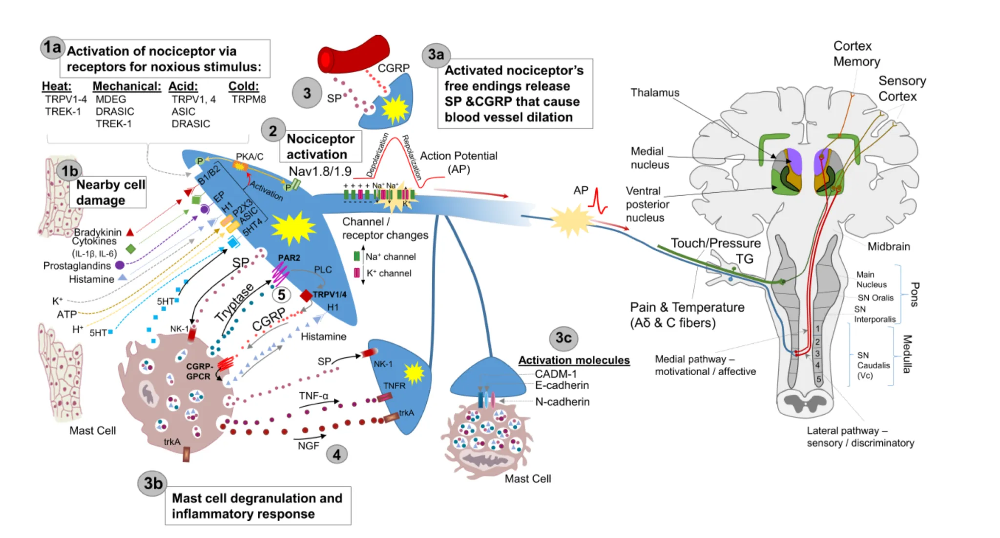
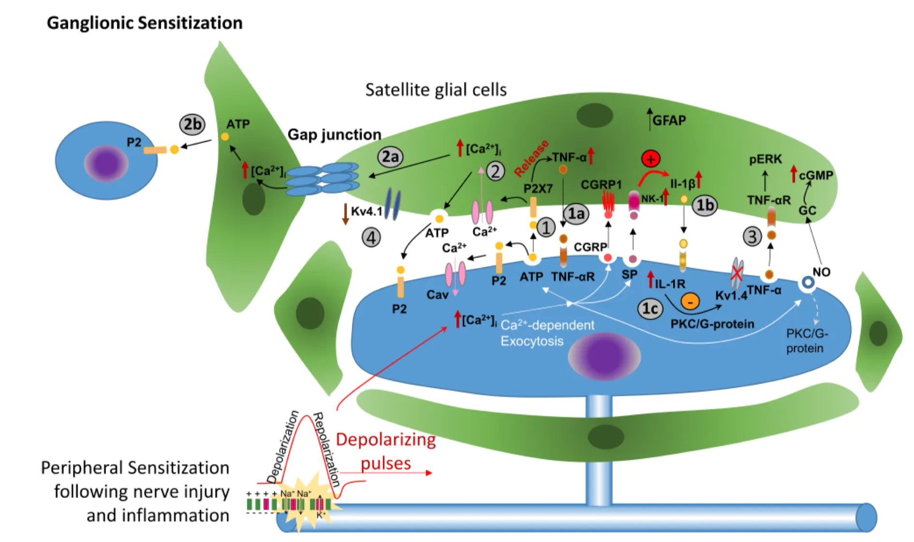
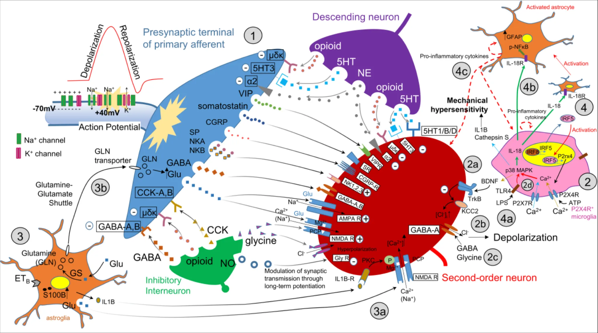
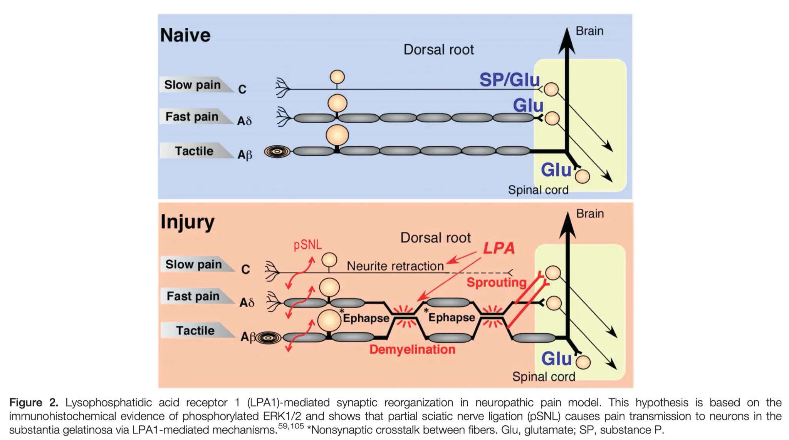

Hoofdstuk 11 Orofaciale pijn
11.1 Inleiding
Vaak voorkomend probleem. De pijn kan van musculoskeletale, dentale, neurale, vasculosympathische of sinogene oorsprong zijn.

Overzicht van nervus trigeminus


11.2 Perifere mechanismen

11.3 Centrale Mechanismen



11.4 Classificaties en Taxonomie
11.5 Differentiaal diagnose

11.6 Behandeling
11.6.1 Medicaties
11.6.2 Chirurgische opties
11.7 Informatie voor patiënten
11.8 Dentogene pijn
Cfr. andere hoofdstukken, voornamelijk pulpitis en periodontitis
Pulpitis
cariës van glazuur en dentine met ontsteking van de pulpa
soms geen cariës maar
toxiciteit van vullingsmateriaal (esthethische)
trauma op tanden
parodontolyse
symptomen
pijn
door warmte, koude, zuur, zoet
heviger dan bij graad II cariës
invloed van temperatuur is wisselend
soms in beginstadium kan koude de pijn verminderen door afname van pulpacongestie
terminaal stadium: gevoeligheid voor warmte neemt toe, geen gevoeligheid meer voor koude, zuur, zoet
karakteristiek spontane pijn buiten de maaltijd of prikkel van warmte/koude
kenmerken
begin
zonder aanleiding of door impactie van voedsel of door liggende houding (’s nachts)
er ontstaat compressie van gecongestioneerde pulpa binnen rigide pulpakamer
bij neerliggen stijgt bloeddruk ⇒ meer stuwing ⇒ pijndrempel overschreden
duur
wisselend, tiental minuten tot uren
verdwijnt even plots als bij ontstaan (eventueel door drinken water, analgetica,…)
verloop over 3-tal weken waarna pulpanecrose door afsnoering apicale vaten
karakter
zeer hevig opschietend met aanhoudende achtergrondspijn
straalt uit in ganse gelaatshelft
moeilijk lokaliseerbaar in causale tand
bij ondermolaren/premolaren uitstraling naar oor
bij bovenmolaren/premolaren uitstraling naar de slaapstreek
objectief
cariësholte, dubieuze vulling, diepe parodontolyse
pijnloos bij percussie tenzij terminale pulpitis
vitaliteit: toegenomen gevoeligheid voor warmte/koude
in terminale stadium neemt gevoeligheid voor warmte toe door uitzetting van gassen in pulpakamer met druk op reeds oedeme pulpa
gevoeligheid voor koude neemt af in terminale stadium
RX
- geen afwijking zichtbaar behalve soms cariës
DDx
trigeminusneuralgie
vasculosympathische pijn
cardiale pijn
Evolutie
- na dagen tot enkele weken valt pijn weg = pulpanecrose
11.9 Acute periodontitis
Aansluitend op pulpitis of op later tijdstip
Symptomen
diepe, kloppende pijn, goed lokaliseerbaar, eventueel met uitstraling
dag en nacht pijn en neemt toe in subperiostaal stadium
afname pijn na doorbraak door periost
elke druk op tand (kauwen) is pijnlijk, soms gevoel dat tand omhoog is gekomen
Objectief
tekenen van pulpanecrose
blauwgrijze verkleuring tandkroon
cariës of tandvulling
achtergebleven wortel
zwelling en roodheid zodra etter periostaal zit
percussie zeer pijnlijk
vitaliteit is negatief
11.10 Parodontale pijn
S/
kan uitbreiden tot aan de apex en aanleiding geven tot pulpitispijn (retrograde pulpitis)
- eerder uitzonderlijk
meestal doffe zeurende pijn, ganse dag aanwezig
moeilijk te lokaliseren, wel bij axiale of laterale druk
Klinisch: tekenen van parodontitis
pockets
tandmobiliteit
gingivitis
Rx
wortelresorptie
verbrede PDL spleet
11.11 Neuralgieën
S/
pijnsyndroom met intermittende pijn in gebied van een zenuw zonder uitvalsverschijnselen
neuropathie: aandoening van perifere zenuw met uitvalsverschijnselen soms met pijn door uit balans raken van sensibele afferente impulsen = deafferentiatiepijn
- treedt op bij lichte aanraking: brandend, prikkend, jeukend
hyperpathie:
één pijnprikkel wordt minder waargenomen
reeks fysiologische pijnprikkels geeft sommatie en uitbreiding buiten gebied van aanraking
Craniale neuralgieën
trigeminusneuralgie
postherpes trigeminusneuralgie
glossopharyngeus neuralgie
neuralgie van n. laryngeus superior
11.11.1 Trigeminus neuralgie
Algemeen
paroxystische pijn op traject van 1 of meer takken van n. trigeminus
meestal unilateraal en opgewekt door prikkeling van zone
na tandpijn, 2e meest frequente oorzaak van hevige pijn in gelaat
vaak nutteloze extracties door foute diagnose
Voorkomen
meestal 50-60 jaar, indien 30-40 jaar denk aan MS
meer bij vrouwen dan mannen
rechts meer dan links
geen familiaal voorkomen, niet erfelijk
Etiologie
meestal geen duidelijke oorzaak = idiopathische/essentiële trigeminusneuralgie
twee mogelijke verklaringen
- demyelinisatie theorie
- demyelinisatie wijzigt activiteit pijnvezels dorsale wortel ⇒ tactiele gewaarwording wordt overgebracht als pijnprikkel
- vasculaire compressie theorie
- druk van kleine arteries op trigeminusradix op plaats van intrede in de hersenstam
indien organische oorzaak = symptomatische trigeminusneuralgie
lokaal:
druk door gezwel/aneurysma in fossa posterior
ontsteking: sinusitis, meningitis, tandontsteking
algemeen
multiple sclerose
1,5% van MS patiënten hebben trigeminusneuralgie = 300x de frequentie van de gehele populatie
3% van patienten met trigeminusneuralgie hebben MS
frequentie van bilaterale aantasting is dubbel zo groot als bij andere oorzaken
in 80-90% gaan symptomen van MS vooraf aan de trigeminusneuralgie maar kan ook omgekeerd
gelijkaardig aan de gewone vorm maar frequenter bilateraal, remissieperioden na behandeling zijn korter
gedemyeliniseerde laesies in de root entry zone
arteriosclerose
intoxicatie (lood, alcohol, arsenicum)
overspanning
diabetes
zona
Symptomen
plotse aanvallen van zeer hevige pijn gedurende enkele seconden en gedurende aantal minuten zijn er salvo’s
kan vele malen per etmaal voorkomen
tussenin volledig pijnvrij
meestal unilateraal en opgewekt door prikkeling in electieve zone
stekend, snijdend of elektrisch van aard
volgens de takken van de n. trigeminus en kruist middellijn niet
kan 1 tak zijn, maar kunnen ook meerdere takken zijn
in dalende volgorde: n. infraorbitalis, n. mentalis, n. buccinatorius, n. auriculotemporalis, n. frontalis, n. zygomaticofacialis
meestal 1 zijde van het gelaat
aantal aanvallen/dag: aantal tot vele
soms pijnloze intervallen van maanden tot jaren
spontaan herstel zeldzaam
vaak evolutie naar aantasting van meerdere takken en afname van pijnloze periodes
uitgelokt door beweging of druk: spreken, wassen, scheren, eten,…
vaak hypergevoelige zone (rond neus, mondhoek) = trigger zone
vaak verstarde gelaatsuitdrukking omdat ze gelaat zo weinig mogelijk proberen te bewegen om uitlokken te voorkomen
soms pijn gepaard met samentrekking van spieren = tic douloureux
soms gepaard met tranen van ogen, hypersalivatie
Klinisch onderzoek
opzoeken trigger zones (uitmonding van zenuw = Valleix punten)
foramen infraorbitale
foramen mentale
grens mediaal en middelste derde van wenkbrauw
meestal geen stoornis in gevoeligheid, geen verlies van corneareflex
causale laesies opsporen
Rx van sinussen, CT/NMR van hersenen
Verloop
zware morele belasting en soms neiging tot zelfmoord
goedaardig, geen levensverkorting
aantasting van meerdere takken en pijn minder beïnvloed door vernietiging perifere zenuwtakken
DDx
pulpitis
pijnaanvallen duren langer en verdwijnen door necrose
nachtelijke pijn door platliggen, bij TN is er bijna nooit nachtelijke pijn waarschijnlijk door tekort aan stimulatie van de trigger points gedurende de slaap
pijn na zona
anamnestisch: blaasjes in gebied van pijn
vaak in gebied n. ophthalmicus
gevoelsvermindering in aangetast gebied
corneareflex afwezig
vasculaire pijn (syndroom van Horton)
aanvallen duur paar uur en t.h.v. diepte van oogkas
geen radiculair verloop van de pijn
sympaticus symptomen: unilaterale neuscongestie, roodheid huid, epiphora tijdens pijnaanval
einde van aanval vaak gepaard met neusloop
Behandeling
medicamenteus
carbamazepine (Tegretol)
hoeksteen
dosis 300-1200 mg/dag
nevenwerking: duizeligheid, nausea
gevaar voor aplastische anemie, lever en nierfunctie
allergische nevenwerkingen
60-90% ondervindt volledige pijncontrole, vaak resistentie na jaren
baclofen (Lioresal)
antispasmodicum met centrale analgetische werking
geen beenmergonderdrukking
startdosis van 3x 10 mg/dag, elke 2 dagen ophogen met 10 mg tot onderdrukking van de pijn
onderhoudsdosis typisch 60 mg/dag
combinatie van Tegretol+Lioresal laat toe Tegretol te minderen in dosis en nevenwerkingen te onderdrukken
phenytoïne (Diphantoine)
langdurige verlichting bij 25% van patiënten
best als adjuvans bij therapie met baclofen
gewone dosis is 300 mg/dag in 3 giften
clonazepam (Rivotril)
- minder duidelijk effect/evidence
perifeer chirurgisch
curettage van kaakbeenholten
- sommige auteurs melden spectaculaire verbetering, geen bevestiging in latere publicaties
alcoholisatie
vooraf LA geven, want doet heel veel pijn
lokale inspuiting van 95% alcohol
perifeer (foramen mandibulae, mentale, canalis infraorbitalis)
centraal (schedelbasis: foramen rotundum, ovale)
meestal eerst perifeer
volledige gevoelloosheid die 10 maanden duurt
injecties regelmatig te herhalen
pijnloze intervallen worden steeds korter, nadien evt centrale injecties
Praktisch protocol:
Voorverdoven: Spyx met Septanest special >> klein volume, aangezien er nog een hoeveelheid alcohol bij moet (risico om te groot volume in weke weefsels te spuiten)
Tuberculine-spuitje van 1ml vullen met Ethanol 96%
Groene naald opzetten
Inspuiten op zelfde wijze als een spyx-verdoving
- Cave: ALTIJD stevig botcontact tijdens inspuiten, zodoende geen ethanol in de m. pterygoideus medialis te spuiten (kan ernstige verlittekening en trismus geven)
streptomycine/lidocaïne injecties
- gunstige resultaten te bekomen
neurexerese
pijnvrij voor ongeveer 3 jaar
kan niet herhaald worden, nadien kan wel alcoholisatie
verschillende technieken voor de NAI beschreven
doorsnijden voor intrede in canalis mandibularis + aan foramen mentale en dan retrograad uittrekken
langs trepanatievenster in buccale corticale plaat vrijleggen en verwijderen
cryotherapie
sinds meer dan 10 jaar gebruikt
zenuw bevriezen met vloeibare stikstof sonde aan -60 tot – 100°C (-89°C) gedurende 2×3 minuten
70% pijnvrij gedurende 1 jaar, 30% gedurende 2-3 jaar
herhaalbaar
sensibiliteit blijft bewaard
intracraniële transcutane behandeling
coagulatie van ganglion van Gasser (Kirschner operatie)
met lange naald onder radiologische controle doorheen foramen ovale in schedelholte
vernietigen van ganglion met thermocoagulatie
voornaamste verwikkeling: anesthesie van cornea soms met verlies van het oog
soms dysesthesie en anesthesia dolorosa die erger is dan initiële symptomen
mortaliteit zeer laag en goed verdraagbaar bij zelfs oudere patiënten
volledig succes met 1-2 operaties bij 96-100%
recidief bij 5-10%
resultaten minder goed in atypische gevallen met constante achtergrondpijn
injectie van glycerol achter ganglion van Gasser
percutane compressie van ggl. trigeminale en wortel
microvascualire decompressie van trigeminusradix in ponto-cerebellaire hoek
rhizotomie in achterste fossa
11.11.2 Glossopharyngeus neuralgie
Algemeen
zeer zeldzame neuralgie in de farynx, tonsillen, achterzijde tong, oor
gelijkenis met trigeminusneuralgie
Symptomen
paroxysmaal, zeer hevig, kortdurend
begint in keel en tongbasis en straalt uit naar het oor
ontstaat door slikken, kauwen, hoesten, geeuwen, niezen, spreken, soms door aanraken van amandel
zeker zijn dat er geen tumor is van tonsil of farynx
Behandeling
carbamazepine (Tegretol) redelijk doeltreffend
indien Tegretol niet helpt, dan groot probleem want zowel intra- als extracranieel zeer moeilijk bereikbare zenuw
11.11.3 Postherpetische neuropathie
Algemeen
na herpes zosterinfectie meestal tak van de n. trigeminus
bij 10% van de patiënten, voornamelijk ouderen
Symptomen
deafferentiatie pijn in aangedane huidgebied
50% heeft na 3 maand nog pijn, 30% na 1 jaar
pijn kan continu zijn, verergerend door aanraken, paroxysmaal
Behandeling
- lage dosis amitryptilline hydrochloride eventueel in combinatie met phenothiazines geven beste resultaat
11.11.4 Eagle syndroom (stylalgia)
Algemeen
processus styloideus t.h.v. schedelbasis, normale lengte 2-3 cm, in verlengde lig. stylohyoideum (hecht aan op cornu minor van hyoid)
bij 4% gedeeltelijk/geheel verkalkt
Symptomen
bij 4% van mensen met verlengde styl. zouden er symptomen van stylalgie zijn
vanaf 7,5 cm is deze palpeerbaar
pijn in verschillende vormen/lokalisaties
last kan bestaan uit doffe pijn en moeite met slikken
gevoel van vreemd lichaam in de keel
in andere gevallen scherpe schietende pijn die doet denken aan glossopharyngeus neuralgie
Behandeling
resectie ligament (intra of extra-orale approach)
soms recidief dus diagnostiek moet goed zijn
11.11.5 Carcinoom
Pijnloos ulcus of tumor met pijn in laattijdig stadium behalve bij tongbasis/hypofarynx/mondbodem daar vaak vroegtijdig pijn
Onderzoek soms moeilijk door spierspanning
Pijn uitstralend naar oor en verharde klier aan carotisbifurcatie zijn vaak eerste symptomen
11.11.6 Kanker-behandeling geassocieerde pijn in de mond
Behandeling van kanker buiten de mond kan pijn geven in de mond
Vincristine
- kan orale mucositis geven, orale candidiasis, neurotoxiciteit + pijn
Oxaliplatine = cytostaticum voor metastatische colorectale kanker
neurotoxisch, perifere paresthesieën, soms irreversibel
bij 70% dysesthesieklachten in gelaat en frequent ook pijn in de kaak
Radiotherapie/chemotherapie
orale mucositis met hevige pijn
osteoradionecrose
Beenmergtransplantatie
- orale mucositis met pijn
Bisfosfonaten, denosumab
parenteraal bij botmetastasen
pijnlijke osteonecrose
11.12 Sinusitis
Sinusitis maxillaris bij
pijn gelokaliseerd rond een van de maxillaire sinussen
verergert bij bukken
gepaard met koorts
gepaard met neusverkoudheid
Klinisch
- percuteer en palpeer de sinus
OPG en CBCT:
vochtniveau’s of sluiering
processus uncinatus of ostium open?
Verder nazicht via NKO
11.13 Intracraniële oorzaken van pijn
Meestal hoofdpijn, geen gelaatspijn
Uitzondering: tumoren van pons/fossa posterior met compressie/irritatie van craniële zenuwen (n. trigeminus)
In later stadium overdruksymptomen: hoofdpijn, projectiel braken
11.14 Trigeminale autonome cephalalgieën (TAC’s) of vasculosympatische pijn
Cluster headache
Synoniemen: syndroom van Horton, migraineuze neuralgie, histamine cephalalgie, vasculosympatische pijn
Recurrente aanvallen van hevige kloppende unilaterale hoofdpijn, meestal diep in oogkas/maxilla gelokaliseerd
Voorkomen
zeer zeldzaam
meestal tussen 20-40 jaar
mannen frequenter (5:1)
geen erfelijkheid
geen hogere incidentie van migraine bij deze patiënten
patiënten hebben vaak stresserende job
velen zijn zware rokers met hoog alcohol gebruik
Etiologie
rol histamine bij uitlokken aanval onduidelijk
gedurende aanvallen verhoogde histamine-waarden in bloed/urine
antihistaminica geen invloed op verloop
vasodilatatie in eindtakken carotis (a. maxillaris, a. ophtalmica) als oorzaak
vasodilatoren lokken pijn uit
pijnverlichting door vasoconstrictoren
thermografie en doppler tonen dilatatie tijdens aanval
Symptomen
hevige unilaterale pijn
gelokaliseerd rond oog en uitstraling naar de wang, voorhoofd en slaapstreek
spontaan begin en abrupt, onuitstaanbaar hevig aanhoudend
1-3 of meer aanvallen per dag op dezelfde tijdstippen van dag/nacht
duren kwartier tot een paar uur
aanvallen ’s nachts, paar uur na inslapen, waardoor wakker worden (dit is nooit bij trigeminusneuralgie)
neusobstructie aan pijnlijke zijde, neusloop bij einde van de aanval
parasympatische hyperactiviteit
ipsilateraal tranend oog
roodheid van oogbol en wangen
zweten
partieel syndroom van Horner tijdens aanval: ptosis, miosis en raar genoeg hyperhydrosis van ipsilateraal voorhoofd
fotofobie, nausea zijn zeldzaam (itt migraine)
periode van aanvallen duurt 2-6 weken (cluster) waarna maanden tot jaren zonder pijn
naarmate recidieven vorderen steeds meer chronisch zonder remissies
aanvallen verminderen in hevigheid en kunnen volledig verdwijnen met verouderen
alcohol en andere stoffen lokken aanval uit tijdens pijn-fase, dit is niet zo in periode van remissie
verhoogde incidentie van duodenum-ulcus
Differentieel diagnose
typisch cyclisch patroon is vrij duidelijk voor diagnose
trigeminusneuralgie en pulpitis benaderen pijnaanvallen qua hevigheid maar niet zo kenmerkende eigenschappen
migraine en arteritis temporalis hebben duidelijk verschillend pijnritme en andere lokalisatie
Behandeling
medicamenteus
korte behandeling corticoïden en temperen dosis
calciumantagonisten (Sibelium) als profylaxe
vasoconstrictoren: ergotamine (Dihydergot), pizotifen (Sandomigran), oxertorofumaraat (Nocertone), methysergide (Deseril)
- tijdens aanval weinig nut door plots begin en korte duur aanval
aerosol ergotaminetartraat of SC of IV dihydroergotaminemesylaat
- gunstige resultaten
zuurstofinhalatie
- gunstige resultaten bij aanval
chronische fase: lithiumcarbonaat
indien geen effect meer van corticoïden of ergotamine: combinaties van producten
andere opties
chloorpromazine (Largactil)
indomethacine (Indocid)
cyproheptadine (Periactin)
antihistaminica geen effect.
indien refractief/zeer hevig eventueem neurochirurgie met elektrostimulatie
chirurgische behandeling
minder betrouwbare resultaten dan bij trigeminusneuralgie
anesthesie wordt moeilijk aanvaard, frequenter anesthesia dolorosa
n. ophthalmica dus risico op gevoelloosheid van cornea
- voorbehouden voor refractaire aan medicamenteuze behandeling met onuitstaanbare pijn
specifieke pijnbanen zijn niet gekend dus vaste volgorde in behandeling aanhouden
proefbehandeling met lidocaïne blok dorsaal van ggl. van Gasser: patiënt vertrouwd maken op reversiebele wijze met therapeutisch resultaat
- N.B. patient moet aanval hebben bij uitvoeren block ⇒ patient alcohol doen drinken of nitroglycerinetablet geven
bij gunstige proeftherapie: percutane therapie
rhizotomie van ggl: radiogolven of glycerol
open operatie met craniotomie
indien mislukken andere behandelingen
grotere morbiditeit/mortaliteit
opties
open trigeminus rhizotomie
neurectomie van nervus petrosus superficialis
sectie nervus intermedius
sectie pijntractus craniale zenuwen V, VII, VIII, IX, X in medulla oblongata
Syndroom van Sluder
grote gelijkenis met syndroom van Horton
neuralgie van ganglion sphenopalatinum
andere theorie: druk op conchae door neustussenschot
kenmerkend: plots stoppen door verdoving van ggl sphenopalatinum via onderste neusgang
11.14.1 Samenvatting
| Clusterhoofdpijn | Paroxysmale hemicrania | SUNCT/SUNA | Hemicrania continua | |
|---|---|---|---|---|
| Geslacht (M:V) | 3:1 | 1:1 | 1.5:1 | |
| Aanvalsduur | 15-180 minuten | 2-30 minuten | 5-240 seconden | Continu met exacerbaties van uren tot dagen |
| Aanvalsfrequentie | 0.5-8 per dag | 1-40 per dag (gemiddelde 11) | 3-200 per dag | Continu |
| Lokalisatie | Orbitaal Temporaal V1> C2 > V2 > V3 |
Orbitaal Temporaal V1> C2 > V2 > V3 |
Periorbitaal V1> C2 > V2 > V3 |
Ganse hemicranium |
| Karakter | Scherp/kloppend | Scherp/kloppend | Scherp/kloppend | |
| Autonome kenmerken | Ja | Ja | Ja | Minder uitgesproken Zanderig gevoel ogen |
| Intensiteit | Ondraaglijk | Ondraaglijk | Ernstig | Minder ernstig |
| Circadiaans rithme | Aanwezig | Afwezig | Afwezig | Afwezig |
| Migraineuze kenmerken - Nausea - Foto/sonofobie |
50% 65% |
40% 65% |
25% 25% |
Zeldzaam |
| Uitlokkende factoren | Ethyl Nitroglycerine |
Soms ethyl | Huidaanraking | |
| Episodisch vs chronisch (%) | 90:10 | 35:65 | 10:90 | |
| Agitatie | 90% | 80% | 65% | |
| Aanvalsbehandeling effect - Zuurstof - Sumatriptan 6 mg - SC indomethacine |
70% 90% Geen effect |
Geen effect 20% 90% |
Geen effect < 10% Geen effect |
|
| Profylaxe | Verapamil Methysergide Lithium |
Indomethacine | Lamotrigine Topiramaat Gabapentine |
Indomethacine |
11.15 Arteritis temporalis
Algemeen
synoniem: reuscelarteritis
uitsluitend boven de 50 jaar
granulomateuze ontsteking van grote en middelgrote arteries op gans lichaam
incidentie: 17 per 100.000
prevalentie 500 per 100.000 voor polymyalgia rheumatica en 133 per 100.000 voor arteritis temporalis
vrouwen drie maal vaker dan mannen
door predilectie voor arteria temporalis ontstond de naam arteritis temporalis, maar is dus eigenlijk systeemaandoening
vaak ook naar Horton genoemd die eerste beschrijving deed in 1932 (verwarring met cluster headache)
relatie tussen polymyalgia en arteritis temporalis is onduidelijk
PR is frequenter
20% van PR patiënten hebben ook AT
ongeveer 50% van AT patiënten hebben gelijktijdig PR
Anatomopathologie
inflammatie van enkel grote en middelgrote arteries
- meest uitgesproken in de media en gefragmenteerde lamina interna
granulaties met T-lymfocyten, histiocyten en reuscellen
obstructie van lumen door oedeem en fibreuze proliferatie van intima met ischemie en eventueel necrose
geen uniforme aantasting maar segmentair (skip lesions) waardoor valsnegatieve biopsies
bij hevige hoofdpijn + gezwollen pijnlijke arterie volstaat kleine biopsie
bij klinisch negatieve arterie aan te raden uitgebreid fragment (5 cm) te nemen
Etiologie en pathogenese
- ongekend maar wellicht cel-gemedieerde immuunrespons
Symptomen
lokaal
afhankelijk van aangetaste arteries
- a. carotis, temporalis, lingualis, facialis, occipitalis, ophthalmica
hoofdpijn temporaal
soms occipitale hoofdpijn, veralgemeende hoofdpijn is zeldzaam
- beschreven als jeukend, brandend
pijnlijke gezwollen a. temporalis, gevoelig bij palpatie
pijn in kaken bij kauwen/spreken = claudicatio van kauwspieren
ischemie van masseterspier
pathognomonisch
minder frequent: oorpijn, heesheid, keelpijn
pijn, claudicatio, zwelling van tong kan periodisch
cases met necrose van de tong
voorbijgaande gezichtsstoornissen: amaurosis fugax = alarmsymptoom
- kan definitieve blindheid geven
voorbijgaande diplopie door ischemie van oogspieren of de zenuwen
aantasting coronairen of intracraniele bloedvaten (CVA) zeldzaam
perifere zenuwsyndromen zeldzaam
soms claudicatio van de arm
soms unilateraal raynaud fenomeen of afwezige pols
Algemeen
verhoogde sedimentatie
koorts
anorexie
anemie
moeheid
gewichtsverlies
gestoorde levertesten (alkalische fosfatasen)
symptomen van polymyalgia rheumatica
bilaterale stijfheid en pijn in nek, schouder en bekkengordel
vooral stijfheid ’s ochtends
plots ontstaan + goede respons op prednisone = karakteristiek voor PR
Diagnose
verhoogde sedimentatie
zekerheid via biopsie van a. temporalis
goede betrouwbaarheid
NPV van 91%
voldoende grote biopsie belangrijk, eventueel tweede biopsie contralateraal bij negatieve eerste biopsie
Evolutie en prognose
belangrijkste complicatie: ischemische neuritis optica eventueel zelfs blindheid
meestal reeds 2-5 maand symptomen voor er blindheid optreedt
vroegtijdige diagnose uiterst belangrijk
zeer goede respons op corticoïden
meestal onderhoudstherapie gedurende een paar jaar
Behandeling
begindosis van 50 mg prednisolone
afbouwen dosis wanneer symptomen verdwijnen
kliniek primeert op sedimentatie
11.16 Glossodynie
Paresthesieën van mondmucosa (glossodynie, burning mouth, orale dysesthesie)
Frequent bij oudere vrouwen na menopauze
T.h.v. tong, prothesedragende mucosa bovenkaak, binnenzijde onderlip
Talrijke oorzaken
psychologisch: angst, cancerofobie
prothesen
contact-allergie op methylmethacrylaat monomeer, onstabiele occlusie (overdreven druk/wrijving op mucosa), prothese plaque met bacteriële en Candida-accumulatie
25-30% van prothesedragers met glossodynie hebben positieve patch test
vermoeden van allergie indien
coïncidentie tussen optreden branderig gevoel en dragen prothese
lokalisatie beperkt tot prothese-dragende mucosa
algemene oorzaken
menopauze
diabetes (minder resistente mucosa, frequente xerostomie, Candida-besmetting)
deficiënties (ijzer, vitamine B, foliumzuur, vitamine B2, B6)
steatorrhea
xerostomie
medicatie (tranquilizers, antidepressiva)
Sjögren
andere oorzaken
antibiotica
mondspoelmiddelen
Behandeling
vaak ontgoochelend
vitamine B supplementen (placebo-effect?)
hormonale substitutie zelden beterschap (bij vrouwen na menopauze bij 18-25% glossodynie)
gunstig met
antidepressiva (Prothiaden)
nadeel: gewichtstoename en toename xerostomie
- Prothiaden geven we niet meer want gewichtstoename van 10-20 kg die je er niet meer vanaf krijgt bij postmenopauzale vrouw
clonazepam (Rivotril)
alfa-liponzuur (LiponixX)
geruststelling en psychologische begeleiding
11.17 Hoofdpijn
Anamnese
duur en verloop
wanneer en hoe begonnen?
constant of in aanvallen?
pijn bij wakker worden of optreden in loop van de dag?
wordt de pijn erger?
hoelang duurt een aanval?
voelt u de aanval aankomen?
treden aanvallen op in weekends/vakanties?
kan er een oorzaak zijn?
plaats
- waar heeft u de meeste pijn?
aard
stekend
kloppend of bonzend
drukkend
beïnvloedende factoren
wordt de pijn erger
bij inspanning
emoties
bukken
fel licht
lezen
TV kijken
tijdens menstruatie
wordt de pijn minder erg
innemen van pijnstillers of andere medicaties
goede nachtrust
massage van nekspieren
bijkomende klachten en verschijnselen
lichtflitsen
plots slechter zicht
tintelingen in gezicht, armen of benen
verlammingen of krachtverlies in armen of benen
bijzondere geur
tijdens aanval
lichtschuwheid
slechter zicht
overgeven
trandend, rood oog
loopneus
krachtverlies van armen of benen
duizeligheid
oorsuizen
dubbelzien
koorts
elders pijn behalve in hoofd
hoofdpijn in de familie
medicijngebruik
gebruik van alcohol/drugs
vroegere ziekten, opnames, operaties
psychoproblematiek (respect voor patient)
11.18 Migraine
Anamnestisch
aanvalsgewijs
vooral in weekend/vakanties/tijdens menstruatie
voelt aanval komen met prodromen (lichtflitsen, slecht zien, tingelingen, verlammingen)
misselijkheid en braken
lichtschuwheid
familiaal voorkomen migraine
Klinisch geen bijzondere bevindingen
11.19 Spanningshoofdpijn
Anamnese
continu aanwezig
vanuit nek naar voorhoofd
als een band rond het hoofd
na spanning of emoties
na lang lezen of TV kijken
afhankelijk van houding (ontspannen gaan liggen doet pijn verminderen)
Klinisch
druk met duim+wijsvinger t.h.v. occiput bij aanhechting van m. trapezius
druk t.h.v. mastoid links en rechts, indien dit meer pijn doet dan t.h.v. occiput dan is het geen spanningshoofdpijn, druk t.h.v. trapezius is pijnlijker
bepaal visus
een niet gecorrigeerde refractieafwijking kan spanningshoofdpijn veroorzaken